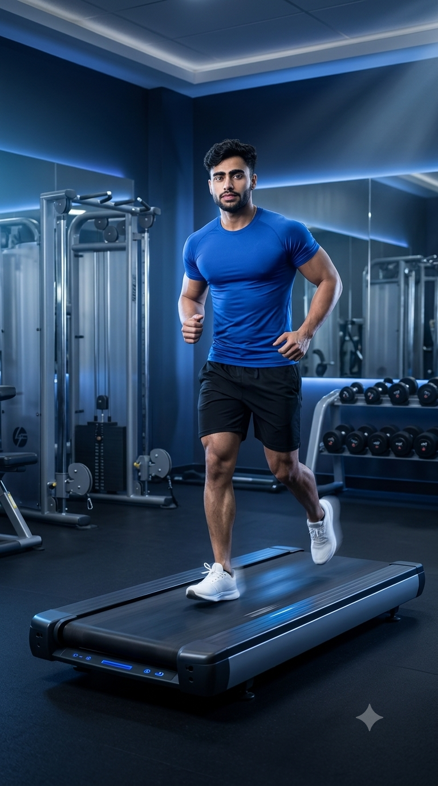

Primary Muscle
Quadriceps & Glutes
Boost Cardiovascular Fitness, Burn Calories, and Improve Running Endurance
Treadmill Running is one of the most effective cardiovascular exercises for improving heart health, increasing stamina, and supporting weight management. Whether you're walking, jogging, sprinting, or performing high-intensity interval training, the treadmill provides a safe and controlled environment for every fitness level. It strengthens the lower body, challenges the cardiovascular system, and allows precise control over speed and incline, making it an excellent choice for fat loss, endurance development, and overall athletic performance.

Quadriceps & Glutes
Treadmill
Beginner to Advanced
Cardiovascular Exercise
Discover the primary and supporting muscles activated during Treadmill Running. Every stride engages the lower body while the core stabilizes your posture and the upper body assists with balance, helping improve endurance, running efficiency, and overall cardiovascular performance.
The quadriceps generate knee extension during every stride, absorb impact on landing, and produce forward propulsion while running at different speeds and inclines.
Drive hip extension, stabilize the pelvis, and generate powerful push-off during each running stride while helping maintain proper running mechanics.
The calf muscles provide ankle plantarflexion, absorb ground reaction forces, and contribute to smooth, efficient movement throughout the running cycle.
The abdominal muscles and hip flexors stabilize the torso, maintain upright posture, and assist leg drive to improve balance, coordination, and running efficiency.
Discover how Treadmill Running improves cardiovascular health, strengthens the lower body, burns calories, increases endurance, and provides a convenient way to train year-round in a safe and controlled environment.
Regular treadmill running strengthens the heart and lungs, improves circulation, and enhances cardiovascular endurance for better overall health and daily performance.
Running on a treadmill increases energy expenditure, making it an effective exercise for weight management, fat loss, and improving overall body composition.
Every stride activates the quadriceps, hamstrings, glutes, and calves, helping improve muscular endurance, running efficiency, and lower-body stability.
Progressive speed and incline adjustments allow you to improve aerobic capacity, stamina, and overall running performance over time.
The treadmill provides a predictable running surface that allows consistent training regardless of weather, traffic, or outdoor conditions.
Whether you're walking, jogging, sprinting, or performing interval training, treadmill running can be easily adjusted to match your fitness level and training goals.
Follow these step-by-step instructions to perform Treadmill Running safely and efficiently. Learn proper posture, foot placement, arm movement, and breathing techniques to maximize performance while reducing the risk of injury.
Stand on the side rails before starting the treadmill. Set your desired speed, then carefully step onto the moving belt once it begins at a comfortable pace.
Begin with a slow walking speed before progressing to jogging or running.
Keep your head up, shoulders relaxed, chest lifted, and spine neutral. Maintain a slight forward lean from the ankles without bending excessively at the waist.
Focus your eyes straight ahead instead of looking down at your feet.
Land softly beneath your body with a comfortable stride length. Push off through your toes while maintaining a smooth, rhythmic running pattern.
Avoid overstriding, as it can increase stress on the knees and hips.
Bend your elbows to approximately 90 degrees and swing your arms forward and backward in coordination with your stride. Keep your hands relaxed throughout the run.
Avoid holding the treadmill handrails unless necessary for balance.
Gradually reduce the treadmill speed to a brisk walk before stopping completely. Allow your heart rate to recover naturally before stepping off the machine.
Never jump off a moving treadmill. Always slow the belt before stepping onto the side rails.
Avoid these common treadmill running mistakes to improve performance, reduce injury risk, and make every workout more effective. Proper posture, stride mechanics, and treadmill safety can significantly enhance your running experience.
Constantly gripping the handrails changes your natural running mechanics, reduces calorie expenditure, and prevents proper arm movement.
Run without holding the rails whenever possible, allowing your arms to swing naturally for better balance and efficiency.
Constantly looking down rounds the shoulders, strains the neck, and negatively affects running posture and breathing efficiency.
Keep your head upright and focus your eyes straight ahead while maintaining a relaxed, upright posture.
Landing too far in front of your body increases impact forces on the knees and hips while reducing running efficiency.
Maintain a comfortable stride length and aim to land with your feet beneath your body's center of mass.
Jumping off or stopping immediately after a hard run can cause dizziness and place unnecessary stress on the cardiovascular system.
Gradually reduce the speed and walk for several minutes before stopping the treadmill and stepping off safely.
Follow these expert coaching tips to improve your treadmill running technique, increase efficiency, reduce injury risk, and get the most out of every cardio session regardless of your fitness level.
Maintain an upright posture with your shoulders relaxed, chest open, and head facing forward. Good posture improves breathing efficiency and helps prevent unnecessary muscle fatigue.
Tall posture equals efficient running.
Swing your arms naturally with your elbows bent around 90 degrees. Efficient arm movement improves rhythm, balance, and running cadence without wasting energy.
Smooth arms create smooth strides.
Progress your speed or incline in small increments rather than making sudden changes. Gradual progression helps your body adapt safely while improving endurance over time.
Progress slowly to perform consistently.
Establish a steady breathing pattern that matches your running pace. Controlled breathing improves oxygen delivery, delays fatigue, and helps maintain performance during longer workouts.
Control your breathing to control your pace.
Progress from comfortable walking to advanced treadmill running by gradually increasing your speed, duration, and workout intensity. Building your fitness step by step helps improve endurance, cardiovascular health, and running performance while reducing the risk of injury.
Begin with a comfortable walking pace to learn proper treadmill operation, improve balance, and develop cardiovascular fitness before progressing to jogging.
Walking mechanics, posture, breathing, and treadmill confidence.
Increase the treadmill speed gradually until you can maintain a comfortable jogging pace while preserving proper running form and controlled breathing.
Aerobic endurance, running rhythm, and movement efficiency.
Challenge yourself by gradually increasing the running speed or adding incline to improve cardiovascular capacity, leg strength, and calorie expenditure.
Speed development, muscular endurance, and aerobic fitness.
Incorporate high-intensity interval training (HIIT), sprint intervals, or incline hill workouts to maximize endurance, power, cardiovascular fitness, and athletic performance.
Maximum endurance, speed, power, and advanced cardiovascular conditioning.
Find answers to the most common questions about Treadmill Running, including proper technique, calorie burn, workout duration, incline training, and how to improve your endurance safely and effectively.
Treadmill Running primarily targets the quadriceps, hamstrings, glutes, calves, and hip flexors while the core muscles stabilize your torso and help maintain proper running posture.
Yes. Beginners should start with brisk walking or light jogging and gradually increase speed, duration, and intensity as their fitness and confidence improve.
Yes. Treadmill Running burns calories efficiently and can support fat loss when combined with a balanced diet and a consistent exercise routine.
Adding a moderate incline can increase workout intensity, engage the glutes and calves more effectively, and better simulate outdoor running. Increase the incline gradually to maintain proper running form.
Beginners can start with 20–30 minutes per session, while experienced runners may train for 30–60 minutes or longer depending on their fitness goals and workout program.
Most people can perform Treadmill Running three to five times per week depending on their recovery, fitness level, and training goals. Include rest or lower-intensity sessions to promote recovery and reduce injury risk.
Improve your cardiovascular fitness, endurance, and calorie burn by combining Treadmill Running with these effective cardio exercises. Each exercise develops a different aspect of endurance and helps create a balanced conditioning program.
Continue building your endurance, burning calories, and improving cardiovascular health with our complete collection of cardio exercise guides. Learn proper technique, muscles worked, training tips, common mistakes, and progression strategies for every fitness level.